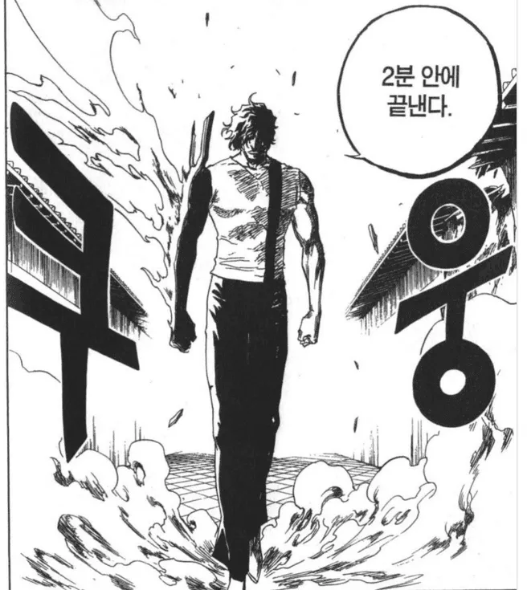
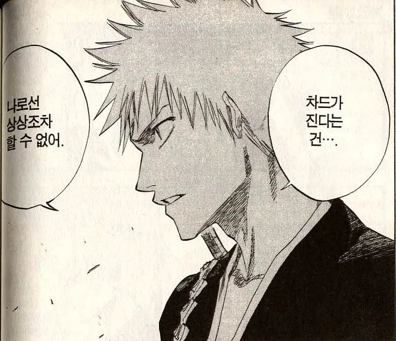
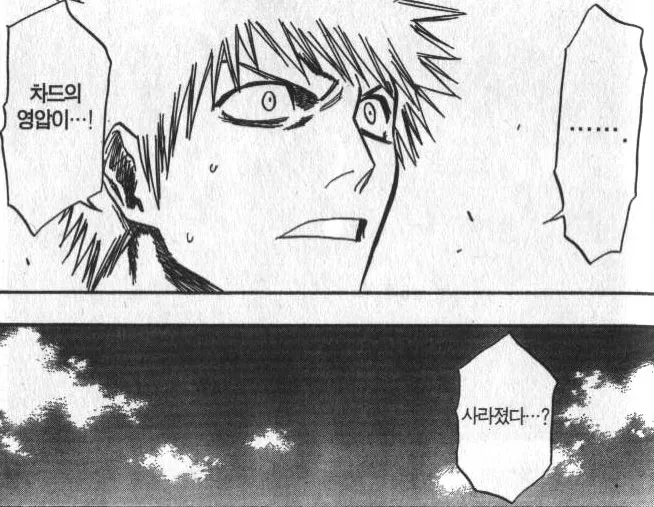
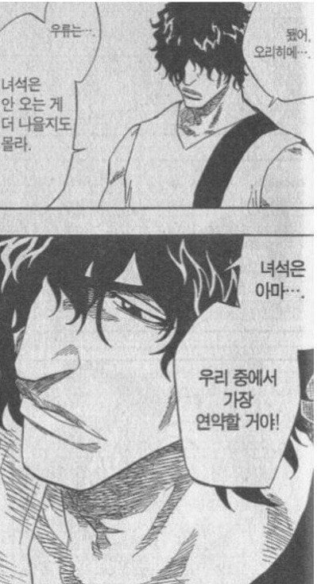
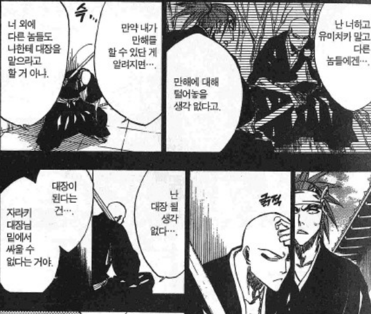
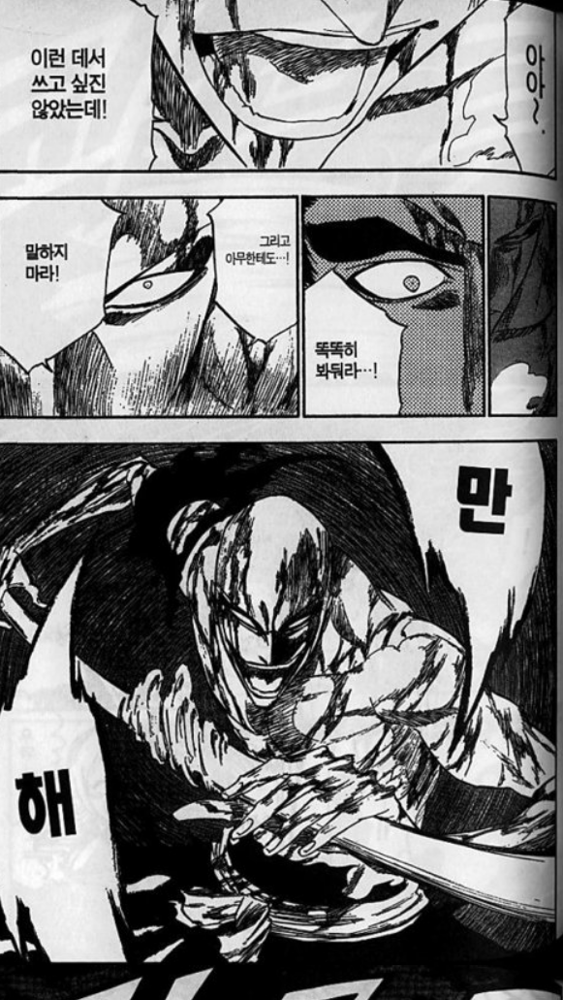
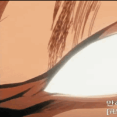
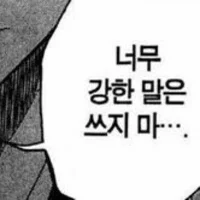
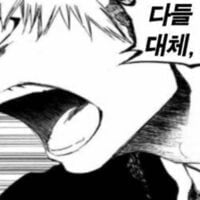
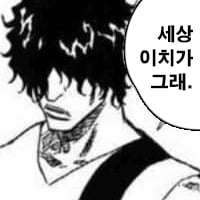

110 · 48 · 8 시간 전 · 원문






이걸어캐안웃음 씨발아ㅋㅋㅋ
수집 당시 댓글 48개
잠적자 · 9 시간 전
↳ 답글 · 신암동할매집 · 3 시간 전

네다찐 · 9 시간 전
반까이야아아앗!
컬러브 · 9 시간 전
블리치 정주행 하면 쉬지 않고 밈들이 쏟아진다고 한다나는 이 이야기를 좋아한다
망구리 · 9 시간 전
개소릿아티스트 · 9 시간 전

ediredo · 9 시간 전
근데 쿠보는 왜 저딴 병신 만해를 준거야? 쿠보가 보기에 좋아보였나?
↳ 답글 · 진짜로 · 9 시간 전
만해가 병신인게 아니라 그냥 쟤가 병신임
↳ 답글 · 코를두번파면코코팜 · 9 시간 전
쿠보 스토리 짜는 방식이 큰 틀만 짜고 스토리 짜다가도 이거 괜찮을듯? 하는거 막 쑤셔넣다보니 찐빠나는게 있다고 본거같음
↳ 답글 · 참철도 · 29 분 전
정확히는 하나의 장면을 위해 스토리를 짜는데 그래서 찐빠가 나는데 그 장면이 간지나서 양날의검인거
↳ 답글 · 번째파산중 · 8 시간 전
옛 만화 흔한 파워인플레 방식임.아군이 힘을 숨기고있었다 -> 적이 각성한다 -> 아군이 맞각성한다 -> 적이 또각성한다 -> 아군이 맞또각성해서 이긴다.이거 남발하다가 조연들 분량조절 실패해서 파워밸런스 곡선에서 미끄러지는거임.대표로 잇카쿠가 늘 끌려나오지만 단풍철권도 그렇고 분량 애매한 사신들은 죄다 이 패턴임.
↳ 답글 · 컬러브 · 8 시간 전
용문귀등환 자체는 유리대포 콘셉트라 잇카쿠가 수련 이벤트 등으로 더 강해졌다면 활약할 수 있었을지도 모름. 내구도도 약하고, 최대 공격력 끌어내려면 시간이 필요하지만 그 대가로 한 방 딜에 모든 걸 건 낭만도 가능했음.문제는 천년혈전 편에서 만해 부러진 이치고에게 큰 시련을 주겠다고 "사실 만해는 수복 불가라 부러지면 못 고침"이란 설정이 등장해 잇카쿠 만해 콘셉트는 완전히 개병신이 됨.
↳ 답글 · 번항게 · 8 시간 전
캐릭터가 워낙 많으니까 13호정도 많은데 따까리 만해가 얼마나 가겠음 ㅋㅋ
↳ 답글 · 뚱녀착정기 · 8 시간 전
저 장면들이 나올 때만 해도 부대장만 해도 절대 약자는 아니었음 잇카쿠는 거기에 만해까지 가능한 강자였고근데 렌지처럼 파워인플레 맞춰주는 보정이 없었고, 만해 수복 불가 설정 나오면서 병신이 됨천년혈전편 연재 당시 쿠보 어깨 씹창나서 내용 막 생략하면서 그릴 때라 잇카쿠 따위를 챙겨줄 여유도 없었고
↳ 답글 · 대장암 · 2 시간 전
머리밀고 단련해도모자를판에 숨겨서 만해쓰던놈이 잘활용하겠냐고
↳ 답글 · 갈아만든IdH · 1 시간 전
만해 제대로 다루려면 10년은 걸린다는 언급도 있는데 숨기느라 해방하고 단련도 안함 ㅋㅋㅋㅋ
↳ 답글 · 240924 · 1 시간 전
사실 치유계 참백도일지도......
↳ 답글 · 격투가 · 53 분 전
사실 사용자에 따라 달라보이는거지 석두가 용문귀등환 들고있으면 존나 썌보이잖아
년이하루처럼 · 9 시간 전

길고예쁜면봉이나뮤 · 9 시간 전
만..해......그만해!!!!!!!!!!!!!!!!!!
괘법르네시떼 · 9 시간 전
더나 · 9 시간 전
요즘 다시 보면 밈때문에 존나 웃김 ㅋㅋ
오즈라 · 9 시간 전
세상이치가그래
탄탄대로 · 9 시간 전
빈수레가 존나 요란하다앗!!
칠사십구 · 9 시간 전
1, 2, 3짤 애니에서 한화에 나오는 명장면들임
잠만자 · 9 시간 전
"이녀석들 밈만 남발하잖아 wwww"
윤아 · 9 시간 전

뷁슈 · 9 시간 전
아이젠 ㅇㄷ?
리프젤리삐 · 9 시간 전
리센느팬 · 8 시간 전
작가가 역량이 딸리는지 자꾸 밈 쑤셔넣더라시도때도없이 나오니까 좀 그럼...ㅇㅇ...
돼지바퀴즈왕 · 8 시간 전
차드는 왜이렇게 쓸모없는걸까
전기m생 · 8 시간 전
차드는 뭔가 주인공급으로 키우려다 인기 없어서 유기시킨듯한 느낌임 ㅋㅋ
로롱도 · 8 시간 전
근데 잇카쿠는 굴욕 당한 뒤에도 작중에서 계속 대장급 실력자 취급해주긴 함 ㅋㅋㅋ
우구스 · 8 시간 전
브안까이야ㅏㅏㅏㅏㅏㅏㅏㅏㅏㅏㅏㅏㅏㅏㅏㅏㅏㅏㅏㅏㅏㅏ
아무것도아닌 · 8 시간 전
차드 저새끼 저러고 한다는게 일반인줘패기라는게 존나웃김ㅋㅋㅋㅋㅋㅋㅋㅋㅋㅋㅋ
파린몬 · 8 시간 전
저거 작가는 뭐라고 생각했을까만해 부러지면 수복 안된다는 설정이랑 저거 잇카쿠 만해 설정 비교해보면서 ㅋㅋㅋ
↳ 답글 · 엘레레레 · 2 시간 전
어? 버려ㅋ
렙치코리타 · 7 시간 전
잇햄은 자기 수준을 이미 알고 있어서 똑똑히 보고 아무한테도 말하지 말라고함 이길생각이였으면 어차피 죽일꺼니까 어디가서 말하지말라고 안해도됨
↳ 답글 · 불꼬리 · 1 시간 전
ㅅㅂㅋㅋㅋㅋㅋㅋㅋㅋ
콩냉이순장고 · 2 시간 전
회사에서코고는중 · 1 시간 전
차드는 2분만에 진짜 끝남(본인이)잇카쿠는 만해 부러졌을때 다른애들처럼 충격도 안받음 아 올것이 왔구나 하는 표정임 지도 지 만해 개폐급인거 아는듯이후로 만해 고칠 생각도 안함 ㅋㅋㅋㅋㅋㅋㅋㅋㅋㅋㅋㅋㅋㅋㅋㅋㅋㅋㅋㅋ
흑밥 · 1 시간 전
차드 나무위키보면 밈만 존나많음ㅋㅋㅋㅋ
많이걸으면터벅터벅닭다리 · 1 시간 전
연고를 용문귀등환에 발라이딴 만해가 있을리 없잖아!!! 이상하게 생각하라고!
설효림 · 1 시간 전
서폿새끼가 왜 딜템가냐고 시발아
개드립콘쓰려고가입 · 34 분 전
만해? 한용운?
↳ 답글 · 햄부기온앤온 · 32 분 전
님은 갔습니다!!
에공 · 25 분 전
레콩키스타 · 14 분 전
걍 처음부터 병신캐릭으로 설정한건가 연재하다보니까 그냥 병신이 된건가
댓글
수집 당시 댓글 48개
잠적자 · 9 시간 전
· 신암동할매집 · 3 시간 전

네다찐 · 9 시간 전
반까이야아아앗!
컬러브 · 9 시간 전
블리치 정주행 하면 쉬지 않고 밈들이 쏟아진다고 한다
나는 이 이야기를 좋아한다
망구리 · 9 시간 전
개소릿아티스트 · 9 시간 전

ediredo · 9 시간 전
근데 쿠보는 왜 저딴 병신 만해를 준거야? 쿠보가 보기에 좋아보였나?
· 진짜로 · 9 시간 전
만해가 병신인게 아니라 그냥 쟤가 병신임
· 코를두번파면코코팜 · 9 시간 전
쿠보 스토리 짜는 방식이 큰 틀만 짜고 스토리 짜다가도 이거 괜찮을듯? 하는거 막 쑤셔넣다보니 찐빠나는게 있다고 본거같음
· 참철도 · 29 분 전
정확히는 하나의 장면을 위해 스토리를 짜는데 그래서 찐빠가 나는데 그 장면이 간지나서 양날의검인거
· 번째파산중 · 8 시간 전
옛 만화 흔한 파워인플레 방식임.
아군이 힘을 숨기고있었다 -> 적이 각성한다 -> 아군이 맞각성한다 -> 적이 또각성한다 -> 아군이 맞또각성해서 이긴다.
이거 남발하다가 조연들 분량조절 실패해서 파워밸런스 곡선에서 미끄러지는거임.
대표로 잇카쿠가 늘 끌려나오지만 단풍철권도 그렇고 분량 애매한 사신들은 죄다 이 패턴임.
· 컬러브 · 8 시간 전
용문귀등환 자체는 유리대포 콘셉트라 잇카쿠가 수련 이벤트 등으로 더 강해졌다면 활약할 수 있었을지도 모름. 내구도도 약하고, 최대 공격력 끌어내려면 시간이 필요하지만 그 대가로 한 방 딜에 모든 걸 건 낭만도 가능했음.
문제는 천년혈전 편에서 만해 부러진 이치고에게 큰 시련을 주겠다고 "사실 만해는 수복 불가라 부러지면 못 고침"이란 설정이 등장해 잇카쿠 만해 콘셉트는 완전히 개병신이 됨.
· 번항게 · 8 시간 전
캐릭터가 워낙 많으니까 13호정도 많은데
따까리 만해가 얼마나 가겠음 ㅋㅋ
· 뚱녀착정기 · 8 시간 전
저 장면들이 나올 때만 해도 부대장만 해도 절대 약자는 아니었음 잇카쿠는 거기에 만해까지 가능한 강자였고
근데 렌지처럼 파워인플레 맞춰주는 보정이 없었고, 만해 수복 불가 설정 나오면서 병신이 됨
천년혈전편 연재 당시 쿠보 어깨 씹창나서 내용 막 생략하면서 그릴 때라 잇카쿠 따위를 챙겨줄 여유도 없었고
· 대장암 · 2 시간 전
머리밀고 단련해도모자를판에 숨겨서 만해쓰던놈이 잘활용하겠냐고
· 갈아만든IdH · 1 시간 전
만해 제대로 다루려면 10년은 걸린다는 언급도 있는데 숨기느라 해방하고 단련도 안함 ㅋㅋㅋㅋ
· 240924 · 1 시간 전
사실 치유계 참백도일지도......
· 격투가 · 53 분 전
사실 사용자에 따라 달라보이는거지
석두가 용문귀등환 들고있으면 존나 썌보이잖아
년이하루처럼 · 9 시간 전

길고예쁜면봉이나뮤 · 9 시간 전
만..해......그만해!!!!!!!!!!!!!!!!!!
괘법르네시떼 · 9 시간 전
더나 · 9 시간 전
요즘 다시 보면 밈때문에 존나 웃김 ㅋㅋ
오즈라 · 9 시간 전
세
상
이
치
가
그
래
탄탄대로 · 9 시간 전
빈수레가 존나 요란하다앗!!
칠사십구 · 9 시간 전
1, 2, 3짤 애니에서 한화에 나오는 명장면들임
잠만자 · 9 시간 전
"이녀석들 밈만 남발하잖아 wwww"
윤아 · 9 시간 전

뷁슈 · 9 시간 전
아이젠 ㅇㄷ?
리프젤리삐 · 9 시간 전
리센느팬 · 8 시간 전
작가가 역량이 딸리는지 자꾸 밈 쑤셔넣더라
시도때도없이 나오니까 좀 그럼...ㅇㅇ...
돼지바퀴즈왕 · 8 시간 전
차드는 왜이렇게 쓸모없는걸까
전기m생 · 8 시간 전
차드는 뭔가 주인공급으로 키우려다 인기 없어서 유기시킨듯한 느낌임 ㅋㅋ
로롱도 · 8 시간 전
근데 잇카쿠는 굴욕 당한 뒤에도 작중에서 계속 대장급 실력자 취급해주긴 함 ㅋㅋㅋ
우구스 · 8 시간 전
브안까이야ㅏㅏㅏㅏㅏㅏㅏㅏㅏㅏㅏㅏㅏㅏㅏㅏㅏㅏㅏㅏㅏㅏ
아무것도아닌 · 8 시간 전
차드 저새끼 저러고 한다는게 일반인줘패기라는게 존나웃김ㅋㅋㅋㅋㅋㅋㅋㅋㅋㅋㅋ
파린몬 · 8 시간 전
저거 작가는 뭐라고 생각했을까
만해 부러지면 수복 안된다는 설정이랑 저거 잇카쿠 만해 설정 비교해보면서 ㅋㅋㅋ
· 엘레레레 · 2 시간 전
어? 버려ㅋ
렙치코리타 · 7 시간 전
잇햄은 자기 수준을 이미 알고 있어서 똑똑히 보고 아무한테도 말하지 말라고함 이길생각이였으면 어차피 죽일꺼니까 어디가서 말하지말라고 안해도됨
· 불꼬리 · 1 시간 전
ㅅㅂㅋㅋㅋㅋㅋㅋㅋㅋ
콩냉이순장고 · 2 시간 전
회사에서코고는중 · 1 시간 전
차드는 2분만에 진짜 끝남(본인이)
잇카쿠는 만해 부러졌을때 다른애들처럼 충격도 안받음 아 올것이 왔구나 하는 표정임 지도 지 만해 개폐급인거 아는듯
이후로 만해 고칠 생각도 안함 ㅋㅋㅋㅋㅋㅋㅋㅋㅋㅋㅋㅋㅋㅋㅋㅋㅋㅋㅋㅋ
흑밥 · 1 시간 전
차드 나무위키보면 밈만 존나많음ㅋㅋㅋㅋ
많이걸으면터벅터벅닭다리 · 1 시간 전
연고를 용문귀등환에 발라
이딴 만해가 있을리 없잖아!!! 이상하게 생각하라고!
설효림 · 1 시간 전
서폿새끼가 왜 딜템가냐고 시발아
개드립콘쓰려고가입 · 34 분 전
만해? 한용운?
· 햄부기온앤온 · 32 분 전
님은 갔습니다!!
에공 · 25 분 전
레콩키스타 · 14 분 전
걍 처음부터 병신캐릭으로 설정한건가 연재하다보니까 그냥 병신이 된건가